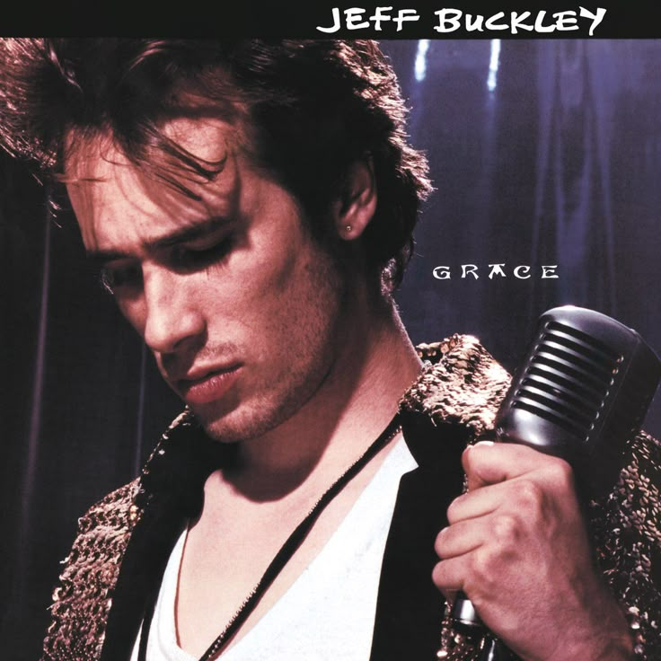
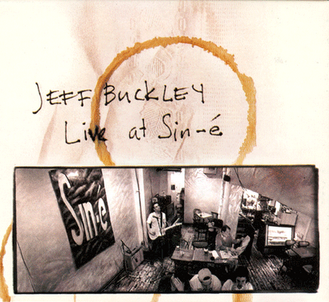
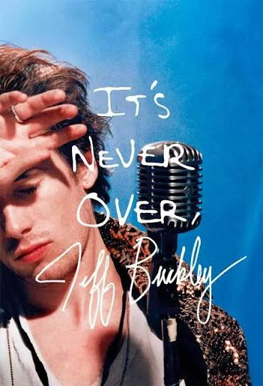
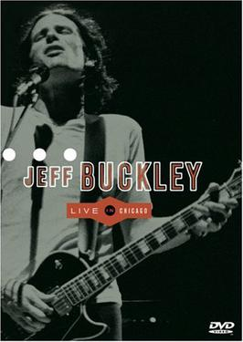

Biografia
Nascido em Anaheim, na Califórnia, o pequeno Jeffrey Scott Buckley veio ao mundo numa casa rodeada de arte. Seu pai, Tim, era músico e compositor e teve certo sucesso comercial na cena de folk e blues americana antes de morrer de overdose em 1975, quando o filho tinha apenas 9 anos de idade. A mãe também era musicista. Tamanho era o talento, que acabou o ensinando a tocar violão a partir dos cinco anos de idade.
O apreço pelas cordas aumentou aos doze anos, quando ganhou sua primeira guitarra e, no ano seguinte, já tocava na banda do colégio. Ao terminar o período acadêmico, foi transferido para Hollywood com o objetivo de entrar no Guitar Institute of Technology, onde edificou seus conhecimentos em teoria musical, mas sempre evitando cantar, visto que não fazia questão de ser comparado com o falecido pai.
Em 1991, após impressionar o público em um show de tributo a Tim Buckley, o jovem músico começou a se apresentar sozinho no bar 'Sin-é', em Nova York. Lá, seu talento chamou a atenção de um executivo da Columbia Records, que lhe ofereceu um contrato para gravar seu primeiro álbum solo.
Em 1996, Jeff Buckley recusou a pressão da gravadora para fazer um segundo álbum comercial, optando por gravar suas próprias ideias baseadas na turnê internacional. Insatisfeito com o resultado inicial, descartou a maior parte do material e recomeçou o projeto, enviando a versão final para a avaliação da gravadora em maio de 1997.
A gravadora Columbia tinha planos ousados para o lançamento do segundo álbum de Jeff Buckley, investindo em uma forte estratégia de marketing liderada pelo empresário Gene Bowen.
Para descansar antes da intensa rotina de divulgação, o músico de 30 anos passou seus últimos dias tocando em uma casa de shows em Memphis com sua banda.
Durante uma pausa, decidiu nadar no rio Wolf e acabou se afogando. Seu corpo foi encontrado seis dias depois no rio Mississippi, e as investigações confirmaram que a morte foi um acidente, sem indícios de uso de substâncias.

Discografia Essencial

Grace
1994 • Álbum de EstúdioO único álbum de estúdio completo lançado em vida. Uma obra-prima atemporal que inclui clássicos absolutos como "Last Goodbye", "Lover, You Should've Come Over" e a sua lendária e definitiva versão de "Hallelujah" de Leonard Cohen.

Sketches for My Sweetheart the Drunk
1998 • PóstumoUma compilação de demos gravadas em quatro canais e sessões de estúdio inacabadas que Jeff estava preparando para o seu segundo álbum antes de sua partida repentina.

Live at Sin-é
1993 • EP OriginalO álbum Live at Sin-é, lançado originalmente em 1993 como um EP e posteriormente expandido em 2003 na sua "Legacy Edition", registra o início da carreira comercial de Jeff Buckley.
Filmes

It's Never Over
2025 • Documentário/Música ‧ 1h 50m
Live In Chicago
1995 • Documentário/Música ‧ 1h 38mm.jpeg)
Grace Around The World
2009 • Documentário/Música ‧ 1h 26mArtigos
“Sounds Like Teen Spirit”, por Sacha Molitorisz, Sydney Morning Herald (nov. 1997);
“Jeff Buckley & The Media”, por Leigh Paatsch, The Big Issue (out. 1997);
Comunicado de imprensa da Columbia Australia Sketches, Assessoria de Imprensa da Columbia Australia (maio de 1997);
“The Son Also Rises”, por Matt Diehl, Revista Rolling Stone (out. 1994);
Comunicado de imprensa da Sony (EUA) Grace, Assessoria de Imprensa da Sony (EUA) (jun. 1994);
“The Arrival of Jeff Buckley”, por Bill Flanagan, Musician (fev. 1994);
“The Unmade Star”, por David Browne, The New York Times (out. 1993);
“Making It In New York: Jeff Buckley”, por Jim Testa, New Jersey Beat (maio de 1993).
entrevistas
As entrevistas de Jeff Buckley (1966–1997) ficaram conhecidas pela franqueza, pela profundidade poética e, muitas vezes, pelo cansaço do cantor em lidar com comparações inevitáveis com seu pai, Tim Buckley.
MuchMusic (1994): Exalta seu amor pelo jazz (Miles Davis e Duke Ellington) e defende que a verdadeira magia musical só acontece na conexão "ao vivo" com o público.
Tony Gervino (1994): Detalha a transição dos shows solo em cafés para o formato de banda com o produtor Andy Wallace, além de revelar sua devoção por Nusrat Fateh Ali Khan.
MusiquePlus (1995): Demonstra exaustão com o marketing da indústria e desabafa sobre o pai, explicando que nunca o conheceu de verdade e pedindo para ser avaliado por seus próprios méritos.
Ray Rogers (1994): • Aponta referências marcantes como Nina Simone, Robert Plant e Patti Smith, descrevendo a sensação de ser totalmente consumido por cada canção que interpretava.
NME (1994): Revela os bastidores de sua infância nômade com a mãe e expõe a intensidade emocional e a honestidade quase dolorosa que direcionavam sua vida e sua arte.